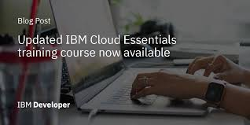
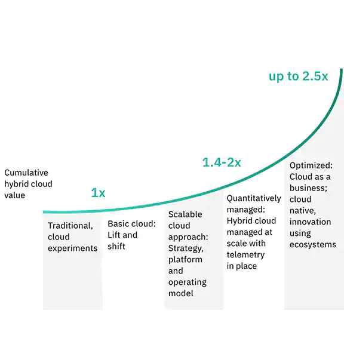

Why IBM for your hybrid cloud approach?
Smarter architecture speeds transformation of the world’s leading organizations.
Redefine how you create and deliver value with hybrid cloud
The new generation of hybrid cloud enables you to build and manage across any cloud with a common platform, allowing you to skill once, build once and manage from a single pane of glass.
At IBM, the foundation of this approach is Red Hat® OpenShift®, the market-leading hybrid cloud container platform. With Red Hat OpenShift, you can develop and consume cloud services anywhere and from any cloud.
At IBM, the foundation of this approach is Red Hat® OpenShift®, the market-leading hybrid cloud container platform. With Red Hat OpenShift, you can develop and consume cloud services anywhere and from any cloud.
IBM also offers IBM Cloud Pak® solutions, an AI-infused software portfolio that runs on Red Hat OpenShift. These solutions can help organizations advance digital transformation with data insights, prediction, security, automation and modernization, across any cloud environment.
IBM has the most qualified and experienced practitioners in the hybrid approach, working across industries to redesign processes and applications to speed business transformation.

IBM and Red Hat shown as leaders in The Forrester Wave: Multicloud Container Development Platforms, Q3 2020